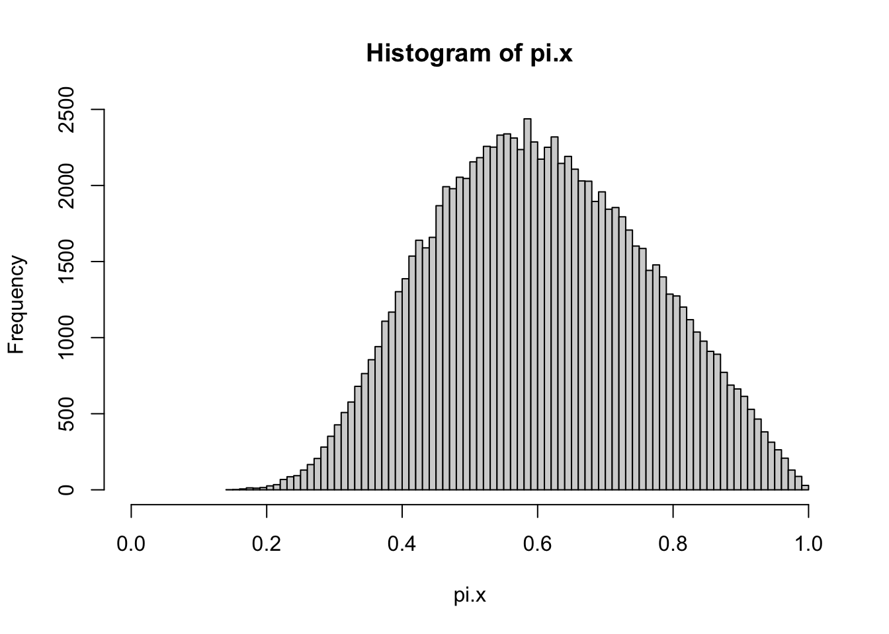
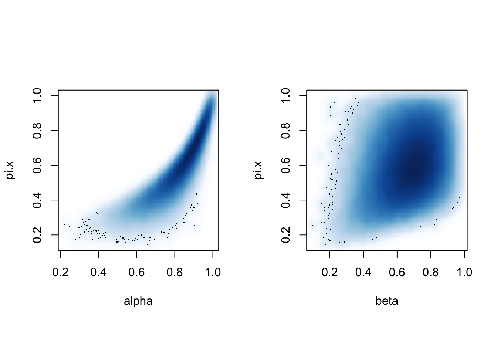
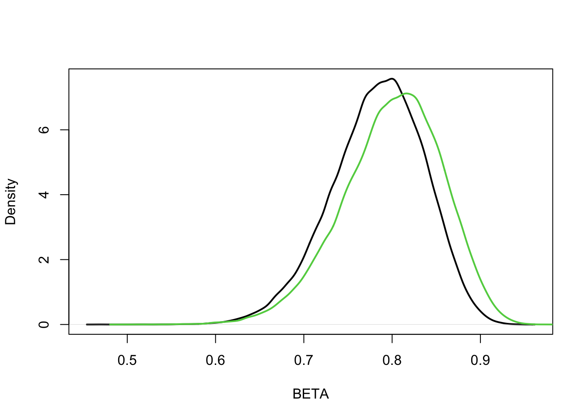
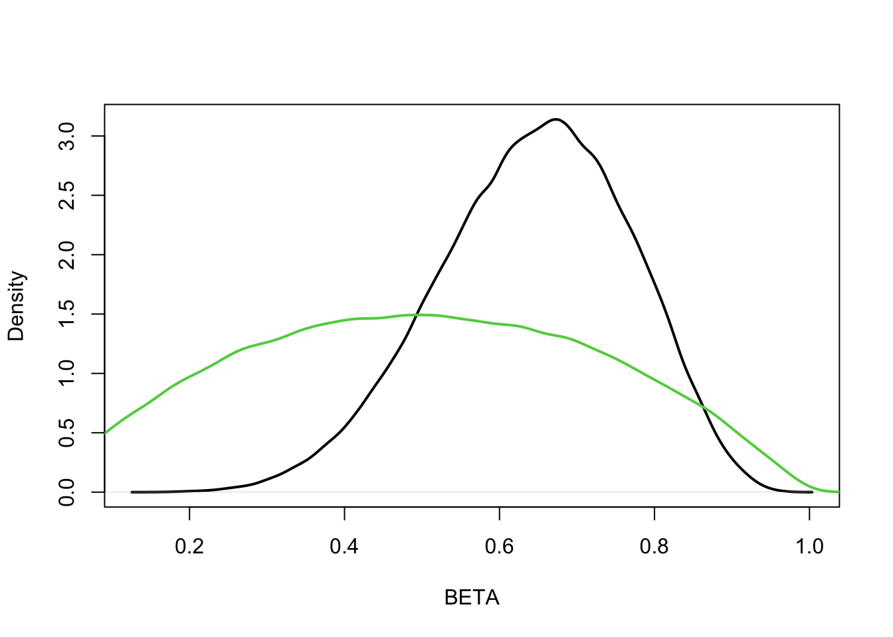
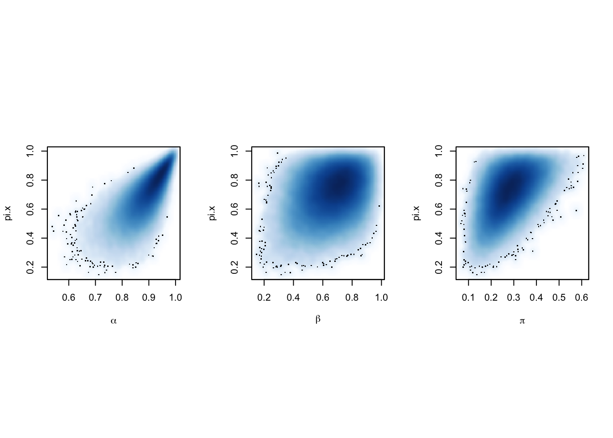
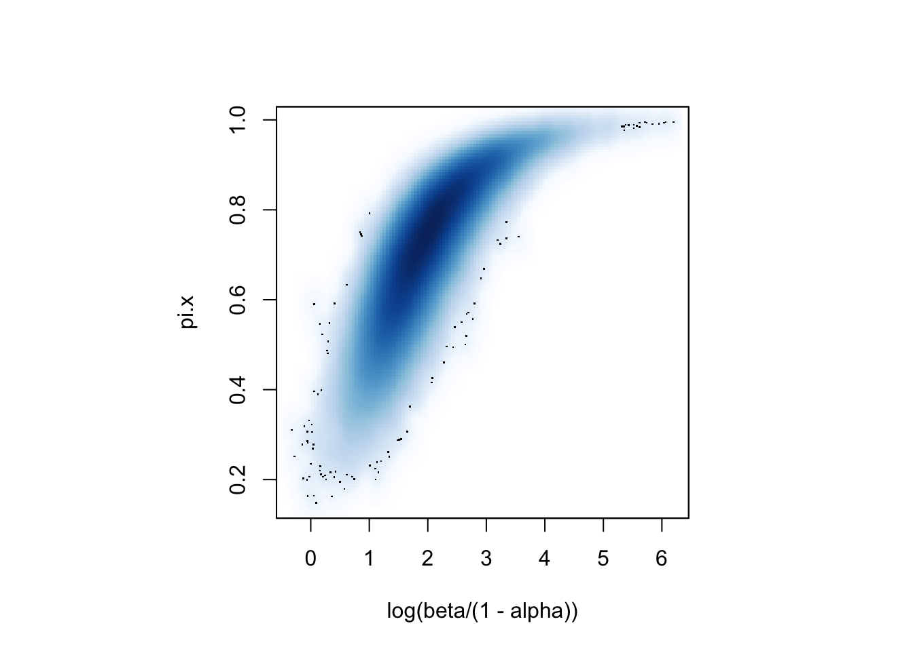

pbinom(3, 12, 0.5)[1] 0.072998051-pnbinom(8, 3, 0.5)[1] 0.03271484So far we focused on statistical summaries, but have paid little attention to uncertainty about them. When we say that the PPV at a level of -1 for ZNF487 expression is .2, how sure are we? When we look at the comparison between the PR curves or benefit curves of two biomarkers, how reliably can we say that one is above the other? We are going to approach these questions using Bayesian models. Both “Bayesian” and “model” are very loaded words. We could go w/out models at all and rely on resampling techniques like the bootstrap to generate uncertainty statements. Or we could specify models, but use non-Bayesian methods, such as maximum likelihood, for our uncertainty. There are pros and cons of each of these choices. Models are powerful and can amplify the value of your data if you get them approximately right (a nontrivial task). Bayes is powerful, general and simple in concept, but a bit high maintenance compared to its frequentist counterparts. There are cool model-free or model-robust Bayesian techniques, but we will only scratch the surface there.
If you are completely new to Bayesian learning, here is a gentle introduction with a cute animation and here is the Bayesrulesbook chapter on the Beta-Binomial case. You will not find it hard to scout material at the right level for you online. “Modeling in Medical Decision Making” has relevant chapters. I posted a copy on the canvas files. A great reference is @Hoff2009 A fun book, though perhaps way more than you signed up for, is [@mcelreath2020]. @sarma2020chi offers a brief review on how to think about, and specify, prior distributions, often a sticky points for Bayesian analysis.
Bayesian learning uses probability to represent both variation / randomness in the real world, and incomplete knowledge. As a result, probabilities provide a selef contained system that formally represents knowledge in the face of uncertainty and can be used to update knowledge when new information is introduced. In general, we typically wish to understand characteristics that govern a population, from which we normally have a subset of data representing it. Population quantities capturing these characteristics are usually represented in terms of a parameter \(\theta\). The subset of data is represented through variables \(x,y\).
The following equation represents the basis of Bayesian modeling.
\[\begin{equation} \begin{split} P(\theta | x,y) &= \frac{P(x,y | \theta) P(\theta)}{\int_\theta P(x,y | \theta) P(\theta)d\theta} = \frac{P(x,y | \theta) P(\theta)}{P(x,y)}\propto P(x,y | \theta) P(\theta) \end{split} \end{equation}\]Likelihood: \(P(x,y | \theta)\)
Prior: \(P(\theta)\)
Posterior: \(P(\theta | x,y)\)
We now focus, to begin, on a case-control example to evaluate a dichotomous biomarker. In this example, we assume that we know whether patients have a disease or not, which we represent with \(y=1\) for a disease case, and \(y=0\) for a non-disease case. Furthermore, we know the biomarker level of each patient, which is represented as \(x=1\) if they have, say, a high level of expression, and a \(x=0\) for a low level of expression. The following \(2 \times 2\) table represents such a scenario.
Here \(m_0\) and \(m_1\) represent the number of patients with no disease and a high biomarker, and the number of patients with disease and a high biomarker, respectively. The total counts for the margins for \(y\) (\(n_0\) and \(n_1\)) are fixed.
In such a set-up, the parameters of interest would usually then be the , denoted as
\[ \beta = p(x=1\mid y=1) \]
and ,
\[ \alpha = p(x=0|y=0) \]
The likelihood for learning about sensitivity and specificity from the observed data would then be,
\[ L_{CC} = \binom{n_1}{m_1} \beta^{m_1}\left(1-\beta\right)^{n_1-m_1}\binom{n_0}{m_0}\left(1-\alpha\right)^{m_0}\alpha^{n_0-m_0} \]
We note that such a construct assumes ahead of time that the total number of disease and disease-free individuals are fixed. This may be too restrictive in some settings. Therefore, we may alternatively fix the sample size instead, so that \(n_0\) and \(n_1\) may vary as long as their sum is equal to a fixed \(n = n_0 + n_1\). Such a model, which we refer to as “population based”, would allow more flexibility and implies the following table.
The parameters associated with this table include the sensitivity and prevalence, \(\alpha, \beta\) from before, in addition to the , represented as,
\[ \pi = p(y=1) \]
The table may be rewritten in terms of these three parameters as a table of proportions, given by
Then the associated likelihood function can be represented in terms of the case control likelihood as,
\[ L_{PB} = \binom{n_0+n_1}{n_1}\pi^{n_1}\left(1-\pi\right)^{n_0}\cdot L_{CC} \]
This model allows for the observation of a different number of disease and no disease cases conditional on a fixed total sample size. The prevalence can then be estimated under such a model, which we note takes a binomial mass function form through the likelihood above.
The likelihood function we have specified under both models can then be incorporated into a Bayesian model. Specifically, we may conduct Bayesian inference on the parameters of interest. Under the case control example, one idea may be to specify a uniform prior on both the parameters for specificity and sensitivity, \(\alpha, \beta\). The prior is given as,
\[ P(\alpha,\beta) = 1, \ \ \text{for} \ \ \alpha \in [0,1], \beta \in [0,1] \]
which when combined with the likelihood \(L_{CC}\) yields the posterior of the form,
\[ P(\alpha,\beta|m_0,m_1) \propto 1 \times \binom{n_1}{m_1} \beta^{m_1} ( 1-\beta) ^{n_1-m_1} \binom{n_0}{m_0} (1-\alpha)^{m_0} \alpha ^{n_0-m_0} \] The uniform prior places equal mass on the possible support for \(\alpha,\beta\). One can recognize that the kernel of the posterior is consistent with that of a Beta distribution and therefore the normalizing constants can be easily derived. If instead we had prior information regarding \(\alpha,\beta\), we may instead model them each as a Beta distribution. Such a prior will jointly be,
\[ P(\alpha,\beta) =\frac{\Gamma(b_0+b_1)}{\Gamma(b_1)\Gamma(b_0)}\beta^{b_1-1}(1-\beta)^{b_0-1}\frac{\Gamma(a_0+a_1)}{\Gamma(a_1)\Gamma(a_0)}(1-\alpha)^{a_1-1}\alpha^{a_0-1} \]
which when combined with the likelihood \(L_{CC}\) will result in the posterior form,
\[ P(\alpha,\beta|m_0,m_1) \propto \beta^{m_1+b_1-1} ( 1-\beta) ^{n_1-m_1 + b_0-1}(1-\alpha)^{m_0 + a_1-1} \alpha ^{n_0-m_0+a_0-1} \]
For the population based set-up, where we only fixed the total number of sample cases, we may put Beta priors on each of the three parameters of interest, \(\alpha, \beta, \pi\). The prior will then be with the form,
\[\begin{equation} \begin{split} P(\alpha,\beta,\pi) & = \frac{\Gamma(p_0+p_1)}{\Gamma(p_1)\Gamma(p_0)}\pi^{p_1-1}(1-\pi)^{p_0-1}\ \times \\ & \frac{\Gamma(b_0+b_1)}{\Gamma(b_1)\Gamma(b_0)}\beta^{b_1-1}(1-\beta)^{b_0-1}\frac{\Gamma(a_0+a_1)}{\Gamma(a_1)\Gamma(a_0)}(1-\alpha)^{a_1-1}\alpha^{a_0-1} \end{split} \end{equation}\]\end{equation}\end{equation}\end{equation}\end{equation}
which leads to a posterior of the form,
\[\begin{equation} \begin{split} P(\alpha,\beta, \pi|m_0,m_1) & \propto \pi^{n_1+p_1-1} ( 1-\pi) ^{n_0+p_0-1} \\ & \beta^{m_1+b_1-1} ( 1-\beta) ^{n_1-m_1 + b_0-1}(1-\alpha)^{m_0 + a_1-1} \alpha ^{n_0-m_0+a_0-1} \end{split} \end{equation}\]Now suppose that we wanted to predict a future outcome \(y^*\) for a subject with a biomarker level of \(x^*\). Then, the is given by,
\[\begin{equation} \begin{split} P(y^*|x^*) &= \int_{\theta} P(y^* | x^*, \theta) P(\theta)d\theta \\ = \int_{\theta} \dfrac{P(y^*,x^*| \theta)}{P(x^*| \theta)} P(\theta)d\theta \end{split} \end{equation}\]The prior predictive may be thought of as the data marginalized over the prior distribution, or the predictied value of a new data point before observing the actual sample itself. Related to this is the , which is interpreted as the predicted value of a new data point after observing the sample data. The posterior predictive is given by,
\[ P(y^*|x^*, y, x) =\int_{\theta} P(y^* | x^*, \theta) P(\theta|y, x)d\theta \]
Related to the above is the .
For example, two experiments to assess a proportion \(\theta\)
We can illustrate the above principle using an example. Using the two experiments on the previous page, we would like to evaluate
Different sampling models may result in different p-values:
@lavine2020nams Has important insight about this if you are interested. His brief and enlightening paper begins by saying: “A fundamental idea in statistics and data science is that statistical procedures are judged by criteria such as misclassification rates, p-values, or convergence that measure how the procedure performs when applied to many possible data sets. But such measures gloss over quantifying the evidence in a particular data set. We show that assessing a procedure and assessing evidence are distinct. The main distinction is that procedures are assessed unconditionally, i.e., by averaging over many data sets, while evidence must be assessed conditionally by considering only the data at hand.”
We now re-examine the case control scenario with a uniform prior and how it can be implemented in R. We first assume that \(m_0 = 1, n_0 = 10, m_1 = 7\) and \(n_1 = 10\).
Then we conduct \(100,000\) draws from the posterior distributions of \(\alpha, \beta\) and \(\pi\), under a uniform prior.
In this case the posterior distribution is available in closed form, so many of the quantities we are interested in are available analytically, or via well-worn and accurate numerical approximations such as the Incomplete Beta function. Even here it is far more straightforward to explore properties of the posteior distribution by generating a sample. For example, it is trivial to derive distributions of arbitrary functions of multiple parameters, which would otherwise normally require some gymnastic around tansformations of variables.
par(mfrow = c(1,2))
hist(beta,nclass=100,xlim=c(0,1), xlab = expression(beta))
hist(alpha,nclass=100,xlim=c(0,1), xlab = expression(alpha))The above figures are the histograms approximating the posterior densities for each of the parameters of interest.
We can also obtain summary statistics by directly looking at the mean and standard deviation of the obtained samples.
We may also examine the positive distribution of the positive predictive value. This illustrate how easy it is to derive posterior distribution of transformations of the variables. To begin, we fix the prevalence of the population at \(0.25\).

We can then obtain a point estimate of the mean of the posterior predictive at a prevalence rate of \(0.25\) and the proportion of samples above \(0.5\).
The posterior predictive value can be analyzed further. Specifically, we can plot the joint distribution of the posterior predictive value against \(\alpha\) and \(\beta\), made using ggplot2.

We may also analyze the sensitivity to a conjugate prior.
b0 = 10; b1 = 40
beta.pre = rbeta(MM,b1,b0)
beta.post = rbeta(MM,x1+b1,n1-x1+b0)
plot(density(beta.post),lwd=2,xlab="BETA",main="")
lines(density(beta.pre),lwd=2,col=3)
b0 = 2; b1 = 2
beta.pre = rbeta(MM,b1,b0)
beta.post = rbeta(MM,x1+b1,n1-x1+b0)
plot(density(beta.post),lwd=2,xlab="BETA",main="")
lines(density(beta.pre),lwd=2,col=3)
We will now focus on the population-based example, whereas previously we saw the case-control study.
Then we conduct \(100,000\) draws from the posterior distributions of \(\alpha, \beta\) and \(\pi\), under a uniform prior.
We can now analyze the distribution associated with the positive predictive value under an unknown prevalence rate, in the population based model. We can obtain summary statistics as before,
The histogram is as follows.
We can then look at the alternate visualization of the joint distribution under an unknown prevalence rate.
par(mfrow = c(1,3), pty = "s")
smoothScatter(alpha, pi.x, xlab = expression(alpha))
smoothScatter(beta, pi.x, xlab = expression(beta))
smoothScatter(pi, pi.x, xlab = expression(pi))

Consider this scenario: a patient you know well is asking for advice on how to process the risk information they are gathering online.
how do you describe to them in simple words what the PPV probability represents?
they also found a Bayesian statement of uncertainty about the relevant PPV (say a posterior IQR). How do you describe the role of the prior in generating this IQR? What questions should they be asking about that prior?